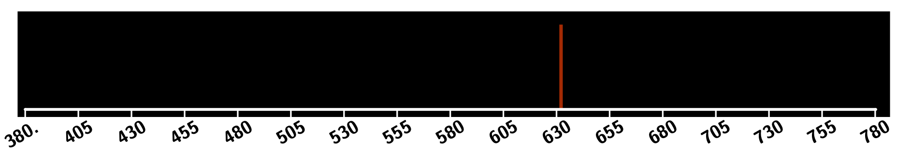
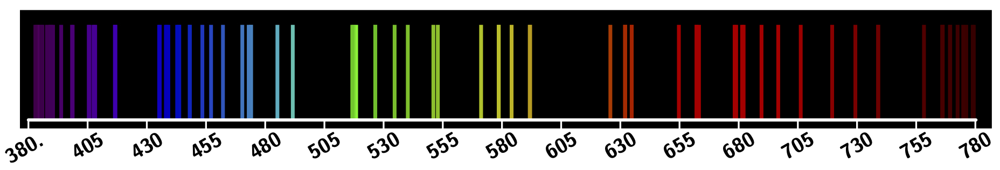
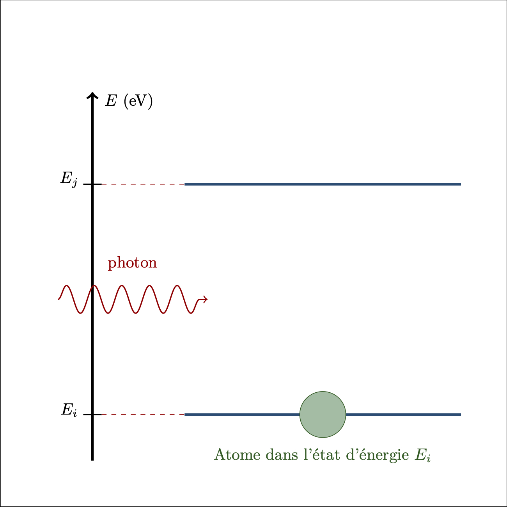
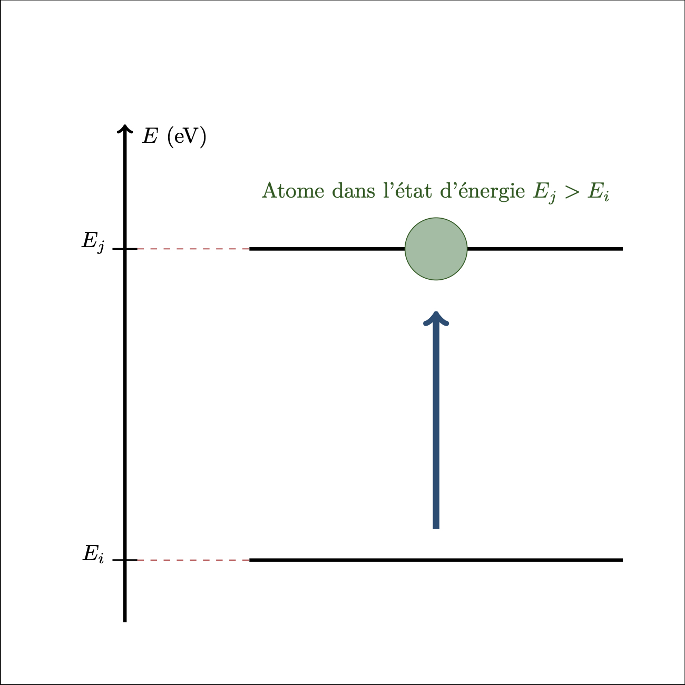
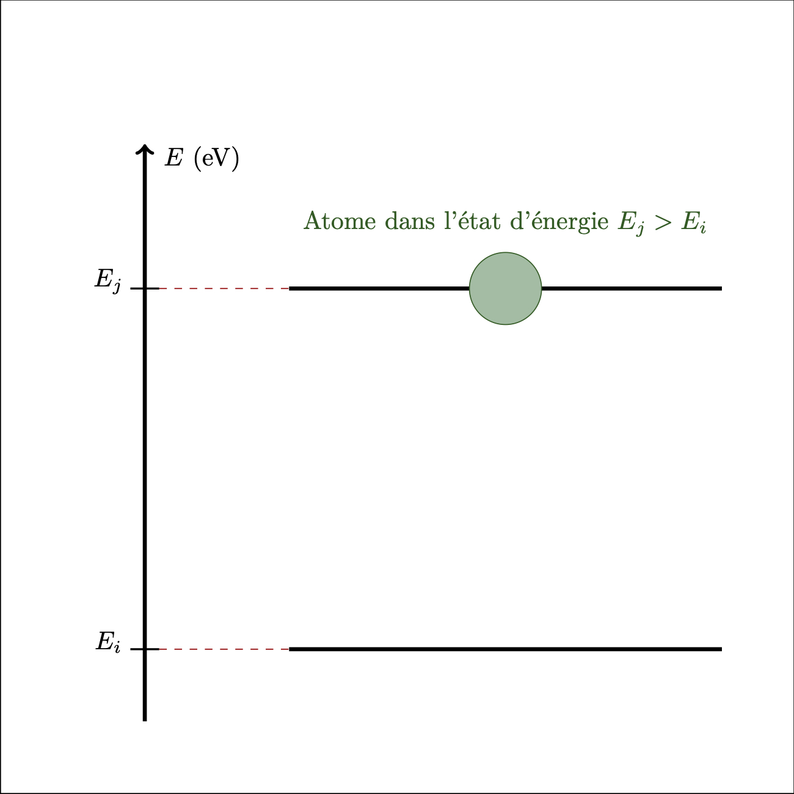
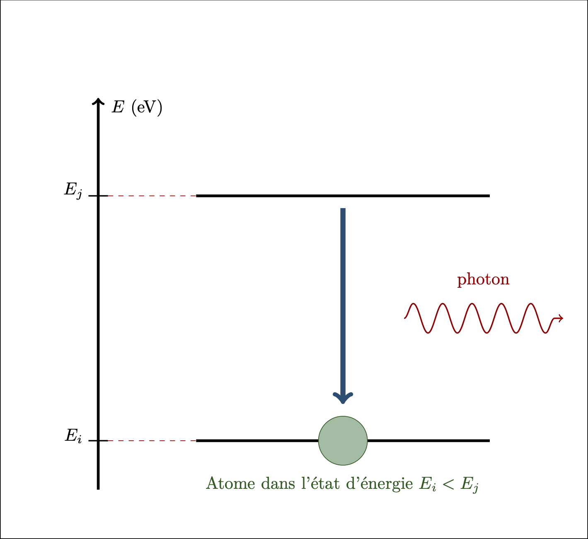

Préhistoire quantique
Lumière
- Newton : la lumière est formée de corpuscules colorés (dispersion de la lumière par un prisme, réfraction, réflexion)
- Huyghens/Fresnel : la lumière est une onde (interférences, diffraction, effet doppler)
Spectroscopie et spectres de raies
- Robert Bunsen - Gustav Kirchhoff - entre 1850 et 1860
- Les spectres de raies (émission ou absorption) sont caractéristiques des éléments chimiques
- Découverte du rubidium (présence d’une intense raie rouge) et du césium (présence d’une raie bleu)
- Découverte de l’hélium : dans le Soleil (1868), sur Terre (1895)
Spectre de raies d’émission d’une lumière monochromatique 
Spectre de raies d’émission d’une lumière polychromatique 
Rayonnement du corps noir (ou rayonnement thermique)
- Gustav Kirchhoff - 1859
- Le rayonnement du corps noir possède un spectre continu et caractéristique qui ne dépend que de sa température et pas des caractéristiques du matériau avec lequel l’onde interagit.
Effet photoélectrique
-
Heinrich Hertz - 1887
-
La découverte et l’étude du phénomène photoélectrique a réservé aux physiciens une très grande surprise. Ce phénomène consiste en ceci qu’un morceau de matière exposé à l’action d’une radiation de longueur d’onde suffisamment courte projette souvent autour de lui des électrons en mouvement rapide. La caractéristique essentielle du phénomène est que l’énergie des électrons expulsés est uniquement fonction de la fréquence de la radiation incidente et ne dépend nullement de son intensité. Seul le nombre des électrons dépend de l’intensité incidente. Ces lois empiriques simples rendaient très pénible l’interprétation théorique du mécanisme élémentaire aboutissant à la libération des électrons photoélectriques, des photoélectrons comme on dit aujourd’hui. La théorie ondulatoire de la lumière qui paraissait vers 1900 reposer sur des bases inébranlables conduit à considérer l’énergie radiante comme répartie uniformément dans l’onde lumineuse. Un électron frappé par une onde lumineuse reçoit donc l’énergie radiante d’une façon continue et la quantité d’énergie qu’il reçoit ainsi par seconde est proportionnelle à l’intensité de l’onde incidente et ne dépend nullement de la longueur d’onde. Les lois de l’effet photoélectrique paraissaient donc bien difficiles à expliquer.
Physique nouvelle et quanta, Louis de Broglie, Flammarion (1933)
Des quanta aux photons
Catastrophe ultraviolette
- La théorie classique ne permet de retrouver le spectre du corps noir que pour les petites fréquences
- Planck - 1900
- À partir des données expérimentales, par modélisation, détermine l’expression de la fonction mathématique qui permet de retrouver le spectre de rayonnement du corps noir
- Modifie la théorie de façon à ce qu’elle « conduise » à la fonction mathématique
- Les échanges d’énergie entre la matière et la lumière se font par « paquets non dissociables » appelés quanta.
Einstein - Effet photoélectrique - 1905
- Ce ne sont pas seulement les échanges d’énergie entre une onde et un corps qui sont quantifiés. L’énergie d’une onde est quantifiée.
- Einstein parle de quantum d’énergie (quanta au pluriel).
- Le terme photon n’a pas été introduit pour la première fois par des physiciens mais par des psychologues et biochimistes. Il a été largement adopté dans la littérature à partir de l’année 1926.
Effet Compton - 1923
- Un photon possède une quantité de mouvement
Photon
Le photon est le quantum d’énergie associé aux ondes électromagnétiques. Il présente certaines caractéristiques de particule élémentaire.
Un photon,
- Se déplace à la célérité c de la lumière quel que soit le référentiel par rapport auquel son mouvement est décrit.
- Ne possède ni masse, ni charge électrique.
- Peut être détruit (phénomène d’absorption) ou créé (phénomène d’émission).
- Possède une énergie $E_r$ dépendant de sa fréquence : $$ E_r = h\, \nu $$ Expression dans laquelle $h$, la constante de Planck, a pour valeur : $$h=\pu{6.62607004e-34 m2.kg/s}$$
Absorption d’un photon par un système : 

Émission d’un photon par un système : 
